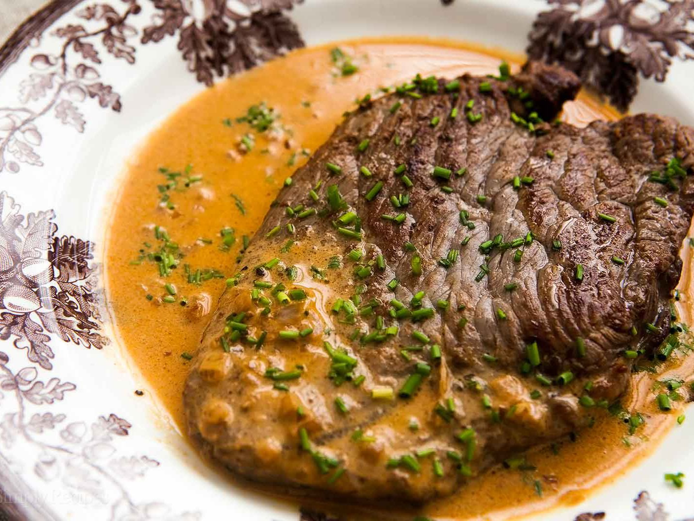

Steak Diane

Prep: 15 mins
Cook: 15 mins
Total: 30 mins
Servings: 2
Steak Diane was a staple on menus in fine dining establishments back in
the day. Prepared tableside where the server ignited the cognac, it was an
impressive sight. You don't need to flame the cognac; just keeping it on
the heat will eventually evaporate the alcohol. But be careful--it can
still flare up if the heat's high enough when you're reducing the sauce.
Ingredients
- 1/2 cup demiglace
- 1 tablespoon Dijon Mustard
- 2 teaspoons Worcestershire sauce
- 1 teaspoon tomato paste
- 1 pinch cayenne pepper
Directions
-
Season steaks generously on both sides with salt. Allow steaks to come
to room temperature while you make the sauce.
-
Stir together demi-glace (see Cook's Note), mustard, Worcestershire
sauce, tomato paste, and cayenne pepper in a bowl.
-
Heat oil in a skillet over very high heat, swirling carefully to evenly
cover surface. When oil reaches a smoking point, transfer steaks to oil;
add a few chunks of butter. Sear meat on high heat until brown on each
side, 2 to 3 minutes per side; keep them on the rare side. An
instant-read thermometer inserted into the center should read 125
degrees F (52 degrees C). Transfer steaks to a warm plate.